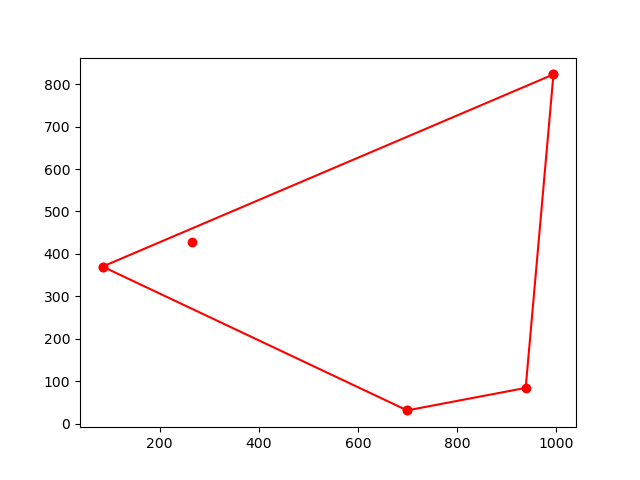
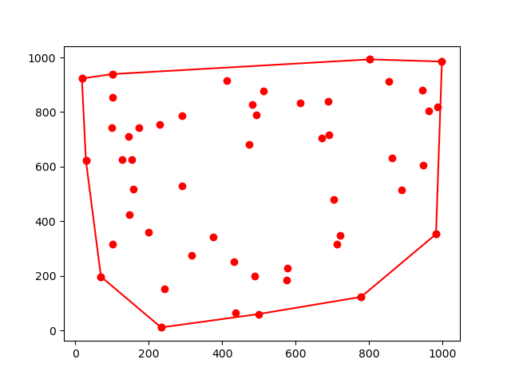
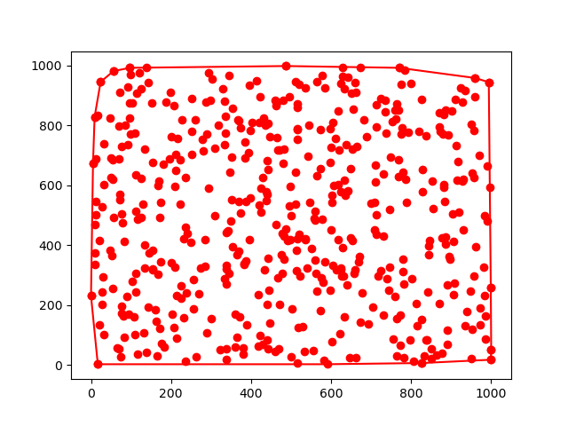
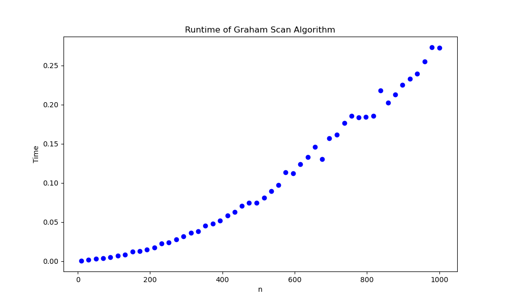
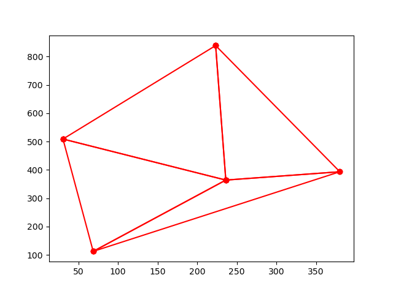
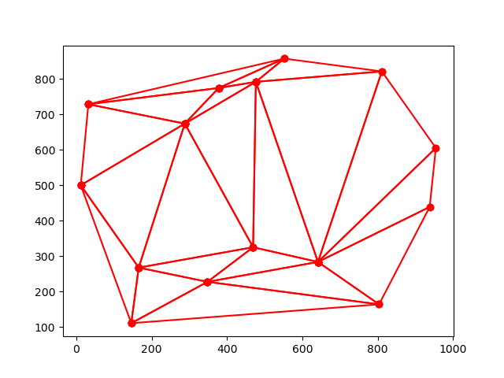
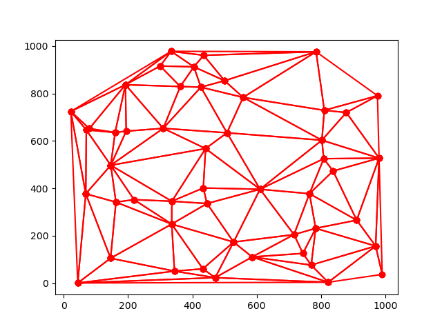
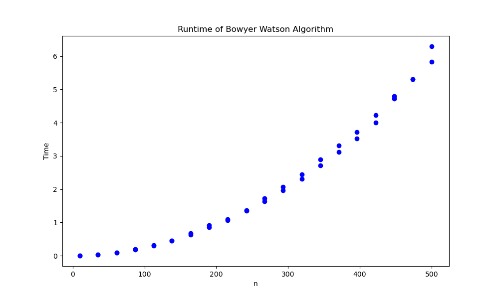

Mandelbrot set visualization
This animation is an approximation of the mandelbrot set. The mandelbrot set is a subset of the complex plane where the complex number c is in the set if the sequencing taking z to z2 + c doesn't diverge to infinity. The approximation is by the naive escape time algorithm. This algorithm runs 1000 iterations on a given point in the complex plane and keeps the point in the set if the value at that iteration is below a certain threshold. This threshold was chosen to be a modulus under 4 as any complex number with it's real or imaginary part being above 2 will always diverge.
String art algorithm
This animation takes in an image and draws it using a set of strings. At each step of the algorithm, it chooses the line which covers the darkest pixels in the inputted image to add to the string art. It then switches all pixels which that line covers in the input image to white and repeats the process.
Sierpinski arrowhead curve
This animation is an approximation of the Sierpinski triangle. The Sierpinski triangle is a fractal in which smaller equaliateral triangles are drawn inside one larger equaliateral triangle. The approximation here uses the arrowhead curve. At each iteration, each line is split into three seperate lines which taken together over many iterations resembles the Sierpinski triangle.
Creating n-gons using force-directed graphs
This animation uses Eade's spring force directed algorithm to draw a regular polygon using a random set of points. The Eades algorithm is used to create network diagrams such that vertices are optimally spaced. It does this through having vertices act as repulsive magnets and edges as springs. To get it to create n-gons n random points are initialized which are connected by edges such that each vertex connects to only 2 other vertices and each edge is of the same length. At each iteration the repulsive and attractive forces are calculated and the vertices are moved.
Graham Scan algorithm
| n = 5 | n = 50 | n = 500 |
|---|---|---|
|  |  |  |
| Run time |
|---|
|  |
The convex hull of a set of points is the set of all possible convex combinations formed by the points. Graham Scan is an algorithm for finding the convex hull of a finite set of points. The algorithm is performed through the following steps:
- A starting point is found by finding the point in the set with the smallest y value. If there is a tie, the one with the smallest x value will be taken.
- The rest of the points are ranked according to their polar angle with respect to the starting point. In the result of a tie, the farthest point is taken and the rest are removed.
- Points are considered sequentially. Points which form a left-handed or counter-clockwise turn will be added to the convex hull perimeter but those which form a right-handed or clockwise turn will be removed. The Graham Scan algorithm has time complexity O(n log n)
Bowyer Watson triangulation
| n = 5 | n = 15 | n = 50 |
|---|---|---|
|  |  |  |
| Run time |
|---|
|  |
A triangulation of a set of points is the division of the convex hull made from those points into triangles. A Delaunay triangulation is a type of triangulation in which no points lie inside the circumcircle created by each triangle. These triangulations have many applications. For example they are used to created triangulated irregular networks which give a vector representation of a 3D surface in GIS applications.
The Bowyer Watson algorithm is a method for constructing a Delaunay triangulation for a set of finite points. It works in the following steps:
- A super triangle is created such that all points are contained within the super triangle. There are many ways of doing so, depending on if the points are generated from a predefined area and how efficient you need to be.
- Points in the set are added one at a time, adding triangles extending from the point to the polygon hole's edge. The triangles which contain the new point in its circumcircle are deleted, creating a new polygon hole.
- Afer all points are added, triangles which are touching the super triangle are deleted, leaving a delaunay triangulation of the set of points.
Drawing the Mona Lisa with probability
This animation takes an image as input and draws a path resembling the image. The input image is taken as a set of points with an associated brightness value. For each point, the brightness value is used to calculate the probability of that point being included in the path. A bernoulli trial is done for each pixel and the path is connected using the naive solution to the travelling salesman problem which finds the next point by minimizing Euclidean distance.
Primality Testing
| 23-1 | 25-1 | 27-1 |
|---|---|---|
| 213-1 | 217-1 | 219-1 |
| 231-1 | 261-1 | 289-1 |
| 2107-1 | 2127-1 | 2521-1 |
| 2607-1 | 21279-1 | 22203-1 |
| 22281-1 | 23217-1 | 24253-1 |
| 24423-1 | 29689-1 | 29941-1 |
To the left are all Mersenne primes with prime exponenets between 3 and 10000 I've found using a primality testing algorithm. The code contains a set of functions which can discover large primes based on a combination of the Fermat and Lucas Lehmer tests. From a given start and ending point it searches through integers which are prime using Fermat's test. Primes which pass Fermat's test are then inputted into a Lucas Lehmer test to see if 2p - 1 is prime.